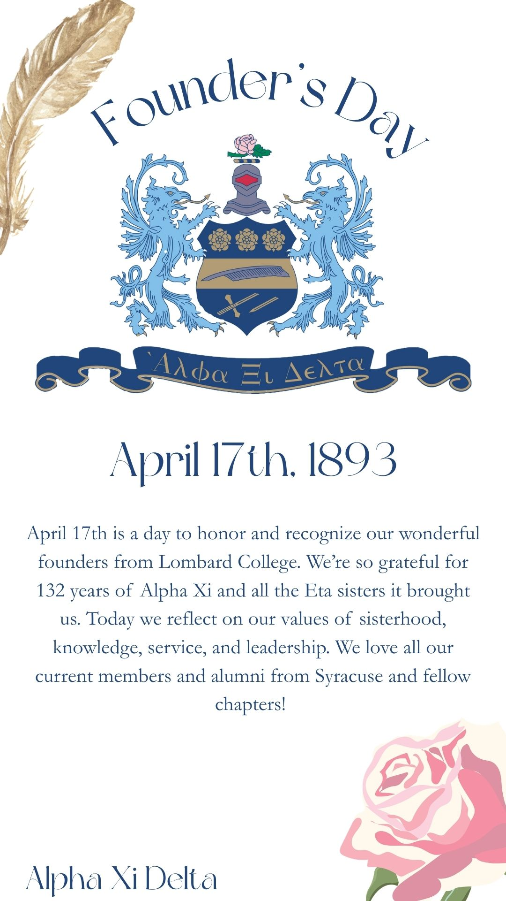
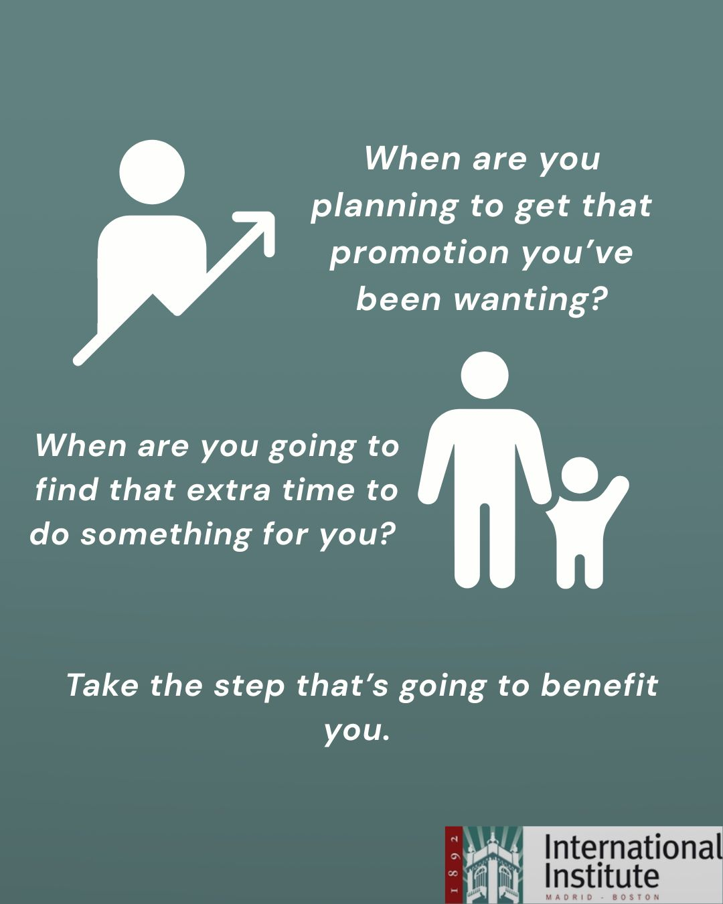
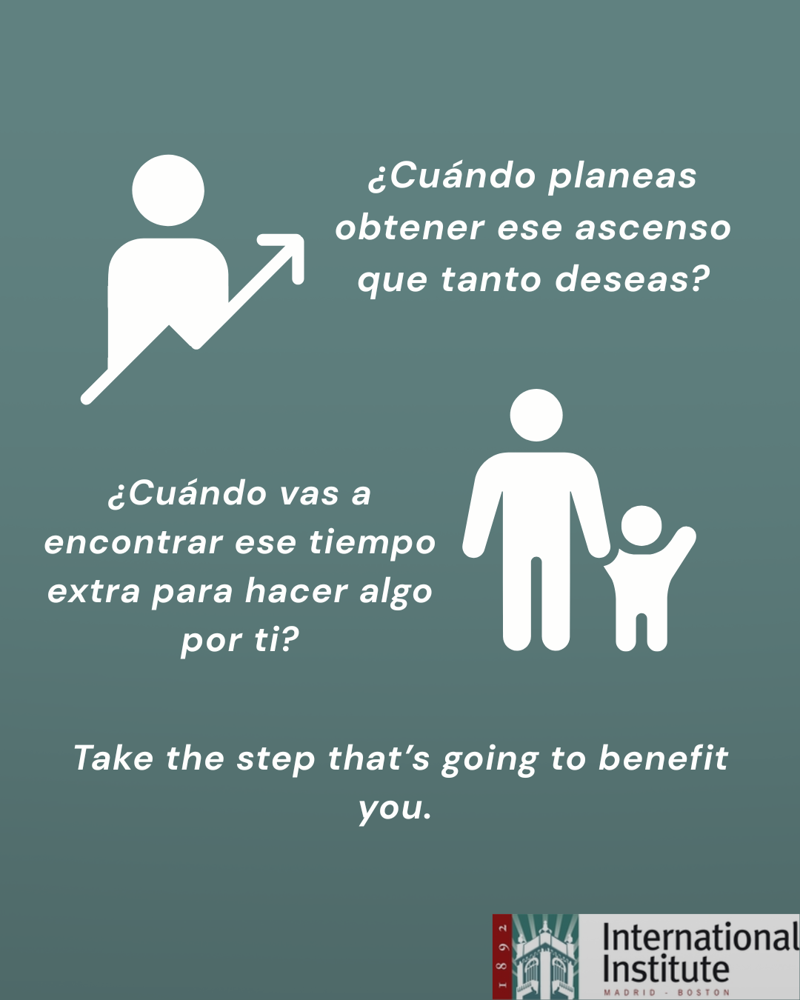
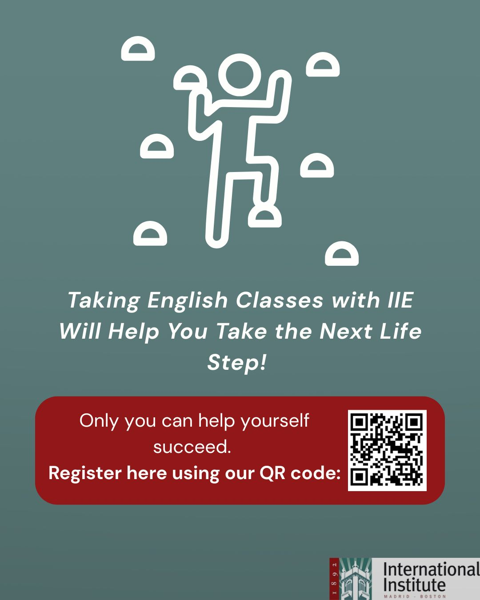
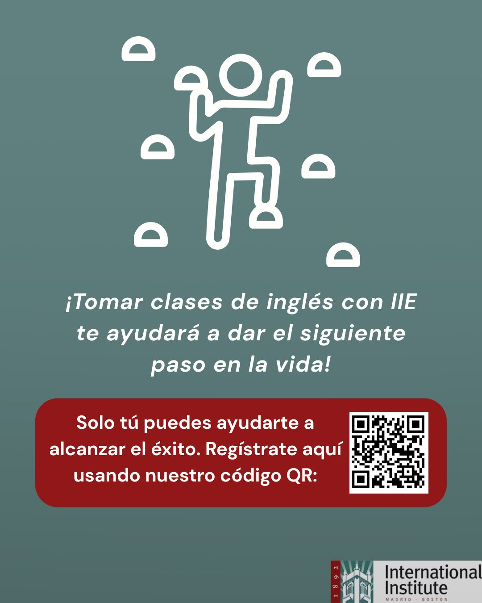

Throughout the duration of my personal and professional experiences, I have been able to utilize social media as a tool to gauge audiences and share messages effectively. The platforms I have used most frequently and have run social media accounts in are Instagram, TikTok, Facebook (Meta), X (Twitter), YouTube, LinkedIn, Threads, and more.The applications I use the most to design content can vary between Canva and Adobe Suite (InDesign, Photoshop, Premiere Pro, etc.). I have had to use social media creation in my classwork, my internships, and my student organizations. Some of my work examples are below:
This campaign was designed by me in the spring of 2025. No one can deny the ever-growing evolution of social media’s influence on companies, especially those catering to a younger demographic. My inspiration to create this project for Poppi and Alo Yoga is that they are two brands that single out the female, young adult demographic as they are typical consumers for health and wellness products. I tried to make this collaboration fun, light, and relatable for a cause. I mainly utilized Photoshop for this project.

From November of 2024 until August of 2025, I helped run the social media accounts for my sorority’s eta chapter, Alpha Xi Delta, as the External Marketing Director. In this role, I had to design lots of content on Canva. Here is just one example of my work.




Above here is a social media post I designed for the International Institute of Madrid in both English and Spanish. In the fall of 2025, I did a study abroad semester in Madrid, where I also participated in a research/campaign project for the International Institute that required me to create social media posts they could use to get Spanish students to sign up for English classes. These posts were developed using Canva.
These examples above are just a few of the ways I have created social media content. If you are interested in seeing more of my work or the possibility of me creating work for you, use the contact information located on my home page.